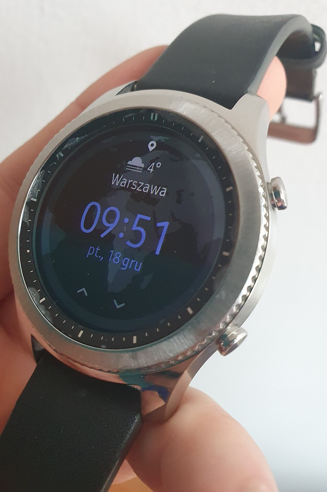
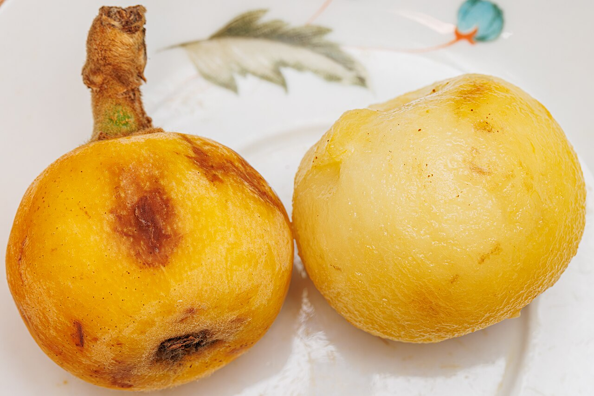
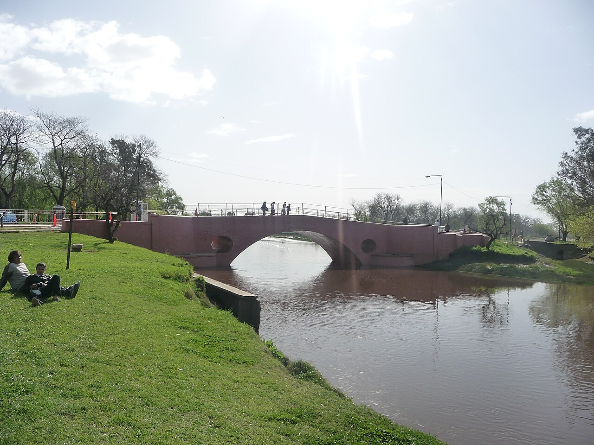

Lula.
diario de la mañana — el mundo, tu ciudad y lo que te asombra
Buen día. Día agradable y en subida: de 17° a 26°, sin lluvia, con la nubosidad aumentando a la tarde. Hoy el Papa está en Córdoba y vuelve a la noche para la vigilia con jóvenes. Es Día de la Tradición. Y la ciencia de hoy es un buen ejercicio de lectura crítica: un reloj que dice detectar hipertensión sin manguito, con números que suenan muy bien y hay que mirar de cerca.
- El mundo en cinco minutos3'
- Argentina y Buenos Aires2'
- Ciencia: el reloj que mide la presión7'
- Mirá a tu alrededor2'
- Receta de estación2'
- La palabra del día1'
- Le français du matin2'
- English corner3'
- Martes de moda: el guardapolvo4'
- Hoy en la historia · un lugar2'
- Lo que me asombra hoy1'
- Pasatiempo: sudoku fácil10'
- Cuaderno: repaso, quiz y escritura4'
Córdoba, la segunda misa: esperan cerca de un millón de personas
León XIV celebra hoy a las 10 una misa en la explanada de FAdeA, la Fábrica Argentina de Aviones, en Córdoba. Las estimaciones oficiales hablan de unas 800.000 personas y la prensa redondea en «casi un millón». A las 15:15 se reúne en la catedral con obispos, sacerdotes, seminaristas y agentes pastorales, y vuelve a Buenos Aires para la vigilia con jóvenes de esta noche en el Monumento de los Españoles.
Lo de ayer, para dimensionar: la misa del lunes en Palermo convocó, según Infobae, a más de dos millones de personas —una cifra que siempre conviene tomar con pinzas, porque las estimaciones de multitudes varían muchísimo según el método—. Fue en el mismo lugar donde Juan Pablo II celebró misa en 1982, en plena guerra de Malvinas.
Y mañana cierra: a las 8 visita el complejo penitenciario de Devoto y a las 10 celebra misa en Luján. Después sigue viaje a Perú, donde estará hasta el 16 o 17 según la fuente, con etapas en Lima, Chiclayo, Cusco y Pucallpa.
Segundo día sin bancos: vuelven mañana
Hoy rige el feriado bancario dispuesto por el Banco Central, así que las sucursales siguen cerradas: la atención al público se retoma el miércoles 11. Con el viernes del Día del Bancario y el feriado nacional de ayer, son cinco días hábiles seguidos sin ventanilla. Lo electrónico —transferencias, billeteras, home banking— funciona normal; lo que se corre es todo lo que depende de días hábiles.
Qué esperar al reabrir: el último dato de mercado es el del viernes, con el riesgo país en torno a los 930 puntos, máximo del año, y el dólar minorista del Banco Nación en $1.570. Cuando un mercado estuvo cerrado varios días, la reapertura suele traer un movimiento más brusco de lo normal: no porque haya pasado algo nuevo, sino porque se descarga de una vez todo lo que pasó afuera mientras tanto. Mañana, entonces, mirá el dato con esa aclaración puesta.
Para hacer en la ciudad
- Esta noche, vigilia en el Monumento de los Españoles: si no vas, evitá Libertador y Sarmiento a partir de las 18.
- Día de la Tradición: en San Antonio de Areco, a 110 km, hay actividades toda la semana; en la ciudad, el Museo de Arte Popular José Hernández (Libertador 2373) es el plan corto y tranquilo.
Un reloj que detecta hipertensión sin manguito: los números finos
De qué estamos hablando: la hipertensión es el factor de riesgo cardiovascular más prevalente del mundo y, sobre todo, el más silencioso: no duele, y cerca de la mitad de la gente que la tiene no lo sabe. De ahí la tentación de usar el reloj que ya llevás puesto como herramienta de tamizaje. Este trabajo de Nature entrena un modelo que, a partir de las señales que el reloj ya registra, marca quién tiene signos de hipertensión.

Quién es quién
- Fotopletismografía (PPG): lo que hace el sensor verde del reloj. Ilumina la piel y mide cuánta luz vuelve; como la sangre absorbe esa longitud de onda, la señal sube y baja con cada latido. De ahí sale la frecuencia cardíaca… y la forma de la onda de pulso, que es lo que acá se explota.
- Por qué la forma de la onda dice algo: en una arteria rígida la onda viaja más rápido y el reflejo que vuelve desde la periferia llega antes, lo que cambia el perfil del pulso. Rigidez arterial e hipertensión viajan juntas, así que el modelo no mide presión: mide una huella asociada.
- «Sin calibración con manguito»: el punto clave. Casi todos los intentos previos necesitaban que te midieras con un tensiómetro real para ajustar el modelo a tu cuerpo. Este no.
- Sensibilidad y especificidad: de cuántos enfermos detecta (sensibilidad) y de cuántos sanos deja tranquilos (especificidad). Siempre se compran una a la otra: si bajás el umbral, detectás más y asustás a más gente sana.
Qué encontraron
- Sensibilidad del 65,8 % y especificidad del 90 % en el conjunto evaluado, usando señales de pulso y de movimiento del reloj, sin calibración.
- La comparación que eligieron: una medición única de presión en el consultorio alcanzó, a la misma especificidad, una sensibilidad del 55,3 %. Es decir: el reloj detectó más casos que una toma de presión aislada.
- El tamaño: 196 adultos. Es un estudio chico para un algoritmo destinado a millones de muñecas.
- Lo que dicen los autores: que no reemplaza al tensiómetro, sino que sirve para sugerir que alguien se haga controlar. Y que hacen falta validaciones más grandes y ensayos aleatorizados.
Lectura crítica
- Sensibilidad 65,8 % significa que se le escapa un tercio. Para una prueba de tamizaje eso es mucho, y tiene un riesgo concreto: que alguien hipertenso se quede tranquilo porque «el reloj no dijo nada». Un falso negativo en tamizaje no es neutro, es una falsa seguridad.
- Hagamos la cuenta que el paper no te hace. Si en una población el 30 % es hipertenso, de 1.000 personas: 300 enfermos, de los que detecta ~197; y 700 sanos, de los que marca mal ~70. De los 267 avisos, 197 son reales: valor predictivo positivo de alrededor del 74 %. Pero si la población es joven y sana, con 5 % de prevalencia, los números se dan vuelta: ~33 verdaderos contra ~95 falsos positivos, y la mayoría de los avisos son error. La misma prueba rinde distinto según a quién se la pongas, y un reloj se lo pone todo el mundo.
- Quién lo pagó: el estudio está financiado por Alphabet y 15 de sus 16 autores son empleados de la empresa que vende el reloj. Está publicado y revisado, y aun así es información que corresponde tener a la vista.
- Y hay un preprint previo en medRxiv, de diciembre de 2025. Yo no vi las figuras finales; los porcentajes que te paso vienen de la cobertura.
La conexión con lo que estudiás
Esto es bioestadística aplicada, y es la parte de la carrera que más rinde fuera de ella. Dos ideas para llevarse. Una: sensibilidad y especificidad son propiedades de la prueba, pero el valor predictivo —la pregunta que de verdad te importa, «si me dio positivo, ¿qué chance tengo de estar enfermo?»— depende de la prevalencia, es decir, de a quién se la aplicás. Dos: cuando una prueba barata se aplica a poblaciones enormes, los falsos positivos se vuelven el problema dominante aunque el porcentaje parezca chico, porque el 10 % de millones de personas sanas es muchísima gente yendo al médico asustada. Esa tensión —detectar más versus alarmar a más— es exactamente la discusión que hay detrás de cada programa de tamizaje: mamografías, PSA, y ahora relojes.
«Opportunistically detecting signs of hypertension on a consumer smartwatch». Di Achille y col., Nature, 5 de noviembre de 2026, doi:10.1038/s41586-026-11336-3 · preprint en medRxiv
Biotec en el mundo real · Fundación Mundo Sano
Si el tema es detectar enfermedades silenciosas, en la Argentina hay una que es el caso extremo: el Chagas. Y hay una fundación que trabaja casi exclusivamente en eso, Mundo Sano, con sede en Buenos Aires y proyectos en varias provincias.
- El problema: la infección por Trypanosoma cruzi no da síntomas durante décadas. Cuando aparecen —miocardiopatía, megacolon, megaesófago— el daño ya está hecho. Se estima que en el país hay más de un millón de personas infectadas y que la mayoría no lo sabe.
- Qué hacen: tamizaje en embarazadas y recién nacidos —el Chagas congénito es la vía que más pesa hoy en las ciudades—, diagnóstico serológico y molecular, acceso al tratamiento y control de la vinchuca.
- El aporte biotecnológico concreto: junto con un laboratorio nacional impulsaron la formulación pediátrica de benznidazol. Suena menor y no lo es: antes había que partir comprimidos de adulto y calcular dosis a ojo, y eso solo se arregla con desarrollo galénico, estudios de estabilidad y aprobación regulatoria.
- Salida laboral: diagnóstico molecular y serológico, epidemiología de campo, desarrollo de formulaciones, salud pública.
Ciencia en la vida cotidiana · Por qué te toman la presión en el brazo y no en otro lado
Porque el objetivo es estimar la presión en la aorta, y la arteria braquial, a la altura del corazón, es el lugar accesible que mejor la representa. La presión no es un número único del cuerpo: cambia con la altura, porque a la columna de sangre hay que sumarle o restarle el peso de esa columna. En el tobillo, de pie, la presión es bastante más alta que en el brazo; en la cabeza, bastante más baja. Por eso el manguito tiene que estar a la altura del corazón, y por eso la medición con el brazo colgando da valores inflados.
El dato que sirve: si te la tomás en casa, tres cosas cambian más el resultado que la marca del aparato: estar cinco minutos sentada antes, con la espalda apoyada y los pies en el piso; el brazo apoyado a la altura del pecho; y no hablar durante la medición. Hablar sube la presión varios milímetros de mercurio. Es el error más común y el más fácil de corregir.
El níspero, que está dando ahora, y el tordo músico


.jpg){kind=link}
El árbol: níspero
| Nombre científico | Eriobotrya japonica (Rosáceas, la familia del manzano y del peral). Viene del sudeste de China, no de Japón, pese al nombre. |
|---|---|
| Cómo reconocerlo | Hoja grande, dura, de borde aserrado, verde oscura arriba y con pelusa color óxido abajo. Y ahora, los frutos: ovalados, anaranjados, en racimos, con dos o tres semillas marrones grandes y lustrosas adentro. |
| Lo asombroso | Florece al revés que todo el mundo: en otoño e invierno, cuando no hay casi nada abierto, y fructifica en primavera. Eso lo convierte en una de las pocas fuentes de néctar de junio y julio para las abejas de la ciudad. La contra es que cada flor está expuesta al frío; la ventaja, que no compite con nadie por polinizadores. Y una advertencia práctica: las semillas, como las de muchas Rosáceas, contienen glucósidos cianogénicos. La pulpa es inofensiva; las semillas no se comen ni se muelen. |
El ave: tordo músico
| Nombre científico | Agelaioides badius (Ictéridos). Gris claro con las alas castañas y un pico cónico oscuro. Anda en grupitos, muy sociable, en parques y arboledas. |
|---|---|
| Cómo reconocerlo | Por el color pardo-grisáceo uniforme y el «hombro» canela. Y por el canto, que le da el nombre: una serie de notas silbadas, melodiosas, bastante distinta del chirrido del tordo renegrido. |
| Lo asombroso | Es el hospedador principal del tordo renegrido, el parásito de cría del que hablamos hace unas semanas, y también del tordo pico corto. Es decir: cría pichones ajenos todo el tiempo. Y acá está lo increíble: el tordo músico tampoco construye su propio nido —usa nidos abandonados de hornero y de otras aves—, así que tenemos una cadena de ocupaciones sucesivas. El hornero hace la casa, el músico la hereda, y el renegrido le pone el huevo adentro. |
Labneh: queso de yogur, con dos ingredientes
Cinco minutos de trabajo y una noche de heladera. Y una lección de coloides.
Ingredientes
- 500 g de yogur natural entero (sin gelatina ni almidón en la etiqueta)
- 1 cucharadita de sal
- Aceite de oliva, za'atar o tomillo, pimienta
- Un lienzo o repasador limpio y un colador
Pasos
- Mezclá el yogur con la sal.
- Forrá el colador con el lienzo, volcá el yogur y atá las puntas.
- Colador sobre un bol, a la heladera, 12 a 24 horas. Cuanto más tiempo, más firme.
- Desmoldá, serví con un hilo de aceite de oliva y hierbas. Dura una semana.
La química de la receta
Qué es un yogur, estructuralmente: la leche tiene la caseína organizada en micelas, agregados de miles de moléculas que se mantienen dispersos porque su superficie está cargada negativamente y se repelen. Las bacterias lácticas fermentan la lactosa y producen ácido láctico; al bajar el pH hasta alrededor de 4,6 —el punto isoeléctrico de la caseína— esa carga se neutraliza, las micelas dejan de repelerse y se unen formando una red tridimensional que atrapa el agua. Eso es el yogur: un gel ácido de caseína.
Qué hace el colado: la red del gel se va contrayendo y expulsa el líquido atrapado. El fenómeno se llama sinéresis —es el mismo charquito que ves arriba del yogur cuando abrís el pote— y acá lo forzás con gravedad. Lo que escurre es el suero: agua, lactosa, minerales y proteínas solubles. Lo que queda es caseína concentrada y grasa.
Y la sal, que no es solo sabor: ayuda a la contracción del gel y a expulsar más agua, y además baja la actividad de agua del producto final, que es lo que lo hace durar en la heladera. No tires el suero: sirve para pan, para panqueques o para la limonada del otro día.
uniforme adjetivo y sustantivo
latín unus (uno) + forma → uniformis (de una sola forma) → castellano uniforme · francés uniforme · inglés uniform
La palabra nació como adjetivo y significaba algo muy concreto: «que tiene una sola forma», sin variación. Ese es el sentido que sigue vivo en física —un movimiento uniforme es el que no cambia de velocidad— y en química, cuando se habla de una mezcla uniforme. El sustantivo, la ropa, es posterior: se empezó a usar en el siglo XVIII, con los ejércitos europeos, y es una abreviación de «vestido uniforme».
Lo interesante es lo que la palabra esconde. Un uniforme sirve para dos cosas opuestas a la vez: borra las diferencias hacia adentro —todos iguales— y las marca hacia afuera —estos son de los nuestros—. El guardapolvo de hoy es el mejor ejemplo argentino: se impuso para que no se notara quién tenía ropa linda y quién no, y terminó siendo el signo más reconocible de pertenecer a la escuela pública. La misma prenda, igualadora adentro y distintiva afuera.
Je commence à neuf heures
— Vous travaillez aussi ?
— Oui, au laboratoire, trois jours par semaine.
— Et vous commencez à quelle heure ?
— Je commence à neuf heures et je finis à cinq heures.
| je travaille | trabajo [she tra-VAI] |
|---|---|
| au laboratoire | en el laboratorio [o la-bo-ra-TUAR] |
| à quelle heure ? | ¿a qué hora? [a kel ÖR] |
| je commence / je finis | empiezo / termino [she ko-MANS / she fi-NÍ] |
Un truco
Fijate en el à de los horarios y el lugar: à neuf heures, à cinq heures, au laboratoire (à + le = au). Y una trampa clásica: en francés las horas siempre llevan la palabra heures. No se puede decir «à neuf» como nosotros decimos «a las nueve»: queda incompleto, suena a número suelto. Lo mismo con los minutos: neuf heures et demie (nueve y media), neuf heures et quart (y cuarto), dix heures moins le quart (menos cuarto).
The cost of looking for something rare
Screening a whole population for a rare condition produces a counterintuitive result that no amount of better technology removes. Suppose a test is right nine times out of ten and the disease affects one person in a thousand. Of a million people tested, the thousand who are ill are mostly found; so are roughly a hundred thousand who are not. The overwhelming majority of positive results are wrong, and this is not a failure of the test. It is arithmetic, and it holds however impressive the sensitivity figure in the press release.
What follows from that arithmetic is a chain of consequences that rarely makes the headline: the biopsies, the repeat scans, the months of anxiety, the occasional harm done by investigating something that was never there. Against this sits the benefit, which is real and falls on a much smaller group. Deciding whether the trade is worth making is not a technical question that the data answers by itself; it is a judgement about whose harm counts and how much.
The honest framing is therefore uncomfortable. A screening programme does not simply find disease. It converts a large number of healthy people into patients for a while, in order to help a small number who genuinely are ill.
- counterintuitive — contraintuitivo
- overwhelming — abrumador
- to hold — valer, seguir siendo cierto
- a trade(-off) — un canje, una contrapartida
- a judgement — un juicio, una decisión valorativa
- framing — el modo de plantear algo
- to convert into — convertir en
- for a while — por un tiempo
El guardapolvo blanco: el uniforme que inventó una idea de país
No hay muchas prendas que signifiquen tanto con tan poco. El guardapolvo blanco se generalizó en las escuelas argentinas en las primeras décadas del siglo XX —el Consejo Nacional de Educación lo fue imponiendo entre 1915 y 1920— y se volvió tan característico que es, probablemente, la imagen más reconocible de la escuela pública argentina en el mundo.
Por qué es como es
- Por qué blanco: por higiene, en el sentido de época. Fueron años de campañas sanitarias y de miedo a la tuberculosis, y el blanco mostraba la suciedad en lugar de esconderla, lo que obligaba a lavarlo. Se podía además hervir y blanquear con lavandina sin que destiñera, cosa imposible con una tela de color.
- Por qué «guarda-polvo»: el nombre dice la función original. Era una prenda de trabajo —la usaban empleados, farmacéuticos, maquinistas— pensada para proteger la ropa de abajo del polvo y la tinta. En la escuela protegía la ropa buena, que muchas veces era la única.
- La tela: algodón, habitualmente en tejidos resistentes y baratos como el brin o el poplin. Tenía que aguantar lavado frecuente con agua caliente y un chico adentro.
- El detalle que no es menor: era de confección casera o de mercería de barrio, no de marca. Se hacía con tres metros de tela, y eso era parte del punto.
Qué resolvía
La ley 1420, de 1884, había establecido la educación primaria gratuita, obligatoria y laica, y a las aulas llegaban juntos los hijos de familias muy distintas: criollos pobres, inmigrantes recién bajados del barco, hijos de comerciantes. El guardapolvo fue la respuesta material a un problema político: que adentro del aula no se notara de dónde venía cada uno. No lo logró del todo —nunca se logra—, pero cambió la foto.
Es raro y es hermoso: un país eligió como símbolo escolar no un escudo ni un color institucional, sino una prenda de trabajo que se ensucia a la vista y hay que lavar todos los días.
10 de noviembre: Día de la Tradición
La fecha es el aniversario del nacimiento de José Hernández, en 1834, autor de Martín Fierro. La estableció primero la provincia de Buenos Aires, en 1939, a propuesta del escritor Francisco Timpone, y después se extendió a todo el país. Lo notable es la elección: no se conmemora una batalla ni una independencia, sino un libro —y uno escrito, además, como denuncia política. Hernández publicó El gaucho Martín Fierro en 1872 contra el reclutamiento forzoso de gauchos para las campañas de frontera, y lo vendía en pulperías, no en librerías.
Un poema de protesta escrito en la lengua de los que no escribían terminó convertido en el emblema de la tradición nacional. Al propio Hernández eso le habría parecido, probablemente, bastante gracioso.
El lugar: San Antonio de Areco

| Dónde | A 110 km de Buenos Aires, sobre el río Areco. Es «la capital de la tradición» por decisión propia y por insistencia: la Fiesta de la Tradición se hace ahí desde 1939. |
|---|---|
| Qué hay | El casco histórico casi intacto, el Puente Viejo de 1857 —el primero de peaje del país—, el Museo Gauchesco Ricardo Güiraldes y talleres de plateros y sogueros que siguen trabajando a mano. |
| El dato | Güiraldes escribió ahí Don Segundo Sombra (1926), la otra gran novela gauchesca, inspirada en un resero real de la zona, Segundo Ramírez. El pueblo es, en buena medida, un museo de sí mismo desde hace un siglo. |
Tu presión arterial tiene horario, y el que no lo respeta se enferma más
Una sola medición de presión es una foto de un río. La presión arterial sigue un ritmo circadiano muy marcado: baja durante el sueño profundo, hace su valor mínimo de madrugada, sube bruscamente en las dos horas que rodean el despertar —el llamado surge matinal— y se mantiene más alta durante el día. La caída nocturna normal es de entre el 10 y el 20 % respecto de los valores diurnos, y a las personas que la tienen se las llama dippers.
Lo asombroso es lo que pasa con quienes no bajan. Los non-dippers —caída menor al 10 %— y sobre todo los risers, que directamente tienen la presión más alta de noche que de día, acumulan bastante más daño de órgano blanco e infartos, incluso con el mismo promedio de 24 horas. No es el número: es la forma de la curva. Y eso solo se ve con monitoreo ambulatorio de 24 horas, no en el consultorio.
De paso explica un dato famoso: los infartos y los ACV se concentran en las primeras horas de la mañana, cuando se superponen el surge de presión, el pico de cortisol y una mayor agregabilidad plaquetaria. El cuerpo no es una máquina con un valor fijo: es un sistema con agenda, y medirlo a lo largo del tiempo es lo que intenta —con sus límites— el reloj de hoy.
El del martes
Repaso y quiz de la mañana
Repaso de idiomas
Quiz
¿Qué mide realmente el sensor verde del reloj?
Sensibilidad del 65,8 % significa que…
El valor predictivo positivo depende sobre todo de…
¿Qué hace que el yogur sea un gel?
El guardapolvo es blanco, originalmente, porque…
El Día de la Tradición conmemora…
Un «non-dipper» es alguien cuya presión…
Escritura
- Quiz: la luz que vuelve de la piel · se le escapa un tercio · la prevalencia · el pH 4,6 · mostraba la suciedad y se hervía · el nacimiento de José Hernández · no baja de noche.
- Repaso: je suis étudiante · je travaille au laboratoire · je commence à neuf heures · contraintuitivo · un canje o contrapartida · valer, seguir siendo cierto.
- Francés: por ejemplo, «Je travaille au laboratoire trois jours par semaine. Je commence à neuf heures.»
Sudoku:
Fuentes de esta edición
- La visita papal: Infobae: la misa de Córdoba · La Nación, en vivo
- Clima: Minuto Uno, con datos del SMN · Vive Click
- Ciencia: Nature: detección de hipertensión en un smartwatch · la cobertura, con los porcentajes · Fundación Mundo Sano
- Moda e historia: Educ.ar: historia del guardapolvo y la ley 1420 · San Antonio de Areco
Mañana, miércoles: letras argentinas. — Lula.